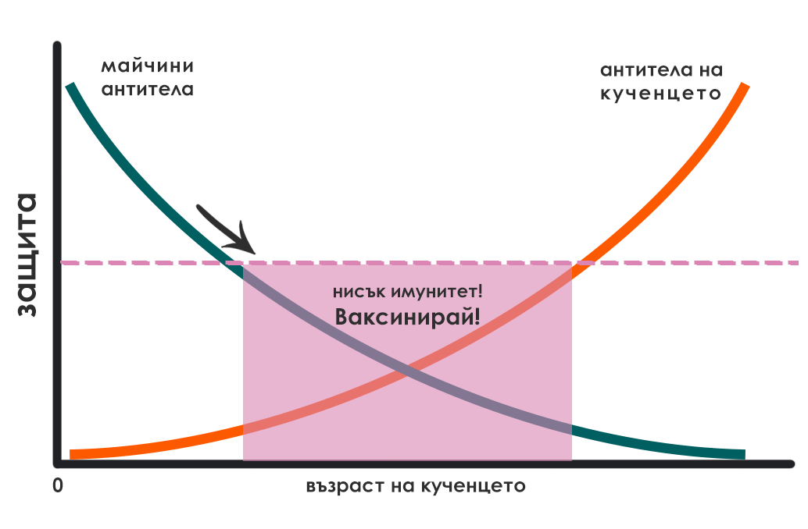
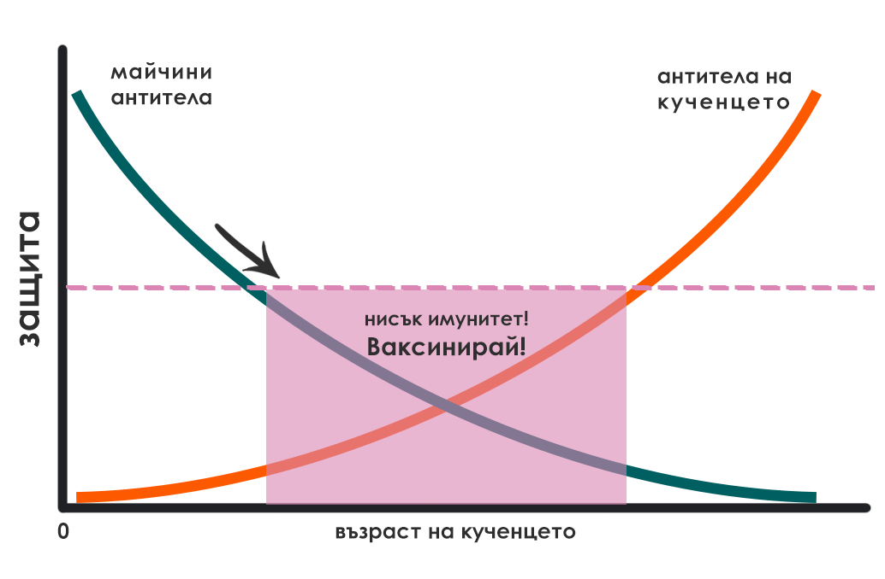

Ваксинация
Какво представлява ваксината? Отговорът на този въпрос се крие в същността на имунната система.
Какво е имунна система? За да не остане и капка неяснота, си представете държава с многобройна и силна армия, която да я защитава. Ако друга държава реши да я нападне, то тя ще бъде разгромена. В този пример нашето тяло представлява тази силна държава, а войниците – това са имунната система.
Но за да бъде една армия достатъчно силна, то тя трябва не само да има многобройни войници, но и тези същите да са обучени как да се бият срещу различните врагове – с различни техники и оръжия. Както една армия трябва да се обучи, така и нашата имунна система – също.
Но как се „обучава“ една имунна система? Както и една армия – чрез тренировки и истински битки. Невинаги имунната система има нужда да „ходи на бойното поле“, за да „тренира“. В 21. век са създадени т. нар. ваксини, които тренират или подпомагат имунната система. Как го правят?
- Ваксините може грубо да се разделят на две категории:
- „живи“
- „убити“
Живите ваксини представляват вируси, които са толкова отслабени, че не могат да причинят заболяване. Картинката става по-ясна, когато си представите немощен 92-годишен дядо, изпратен на бойното поле – невиждащ и нечуващ. Тези ваксини съдържат вирус или част от вирус, който бива регистриран от имунната система, която впоследствие произвежда антитела (частици, които се борят срещу вируси и бактерии) и така имунната система става по-силна, защото при следващ контакт на имунната система с този вирус, тя вече е изградила антитела и го унищожава.
Убитите ваксини съдържат „убит“ вирус, който при контакт с имунната система я кара да произвежда антитела и съответно така да изгради имунитет. Живите ваксини можем да ги наречем „инфекциозни“, защото макар и много рядко, този 92-годишен дядо може да прогледне и да извади отнякъде къртечницата, т. е. уж отслабения вирус да възвърне силите си и да причини заболяване.
През първите седмици от живота си повечето котенца са защите от майчините антитела, които са приели чрез майчиното мляко. Тези антитела намаляват, като изчезват до 8-12-седмична възраст. Когато майчините антитела са оскъдни, то котенцата са по-малко защитени и съответно са по-уязвими. Когато майчините антитела са в изобилите, то те са защитени за по-продължително време. След като майчините антитела намалеят, тъй като котенцата стават уязвими, трябва да започне тяхната ваксинация, за да изградят достатъчно силна имунна система.
 

Ваксините биват задължителни и незадължителни – първата група се поставя на всички котки и котенца, докато незадължителните – само при риск от излагане на определено заболяване.
- Вирусите, срещу които задължително трябва да се ваксинират котенцата, са:
- вирус на котешка панлевкопения (съкратено, FPV) – причинява котешка панлевкопения
- котешки херпесвирус (съкратено, FHV-1) – причинява котешки инфекциозен ринотрахеит
- котешки калицивирус (съкратено,FCV) – причинява котешка калицивироза
- вирус на беса (на англ. Rabies), ако котката ще пътува в ЕС – причинява бяс
По най-разпространената ваксинационна схема у нас имунизацията на котенцата започва на 8-9-седмична възраст, като след 3-4 седмици се поставя и втората ваксина. Някои ветеринарни лекари поставят и трета ваксина (бустер) между 16-седмична и 20-седмична възраст.
Според Ръководството за ваксиниране на кучета и котки на Световната асоциация на ветеринарните лекари за дребни животни (WSAVA), издадено през 2016 год., ваксините може да се провалят да индуцират имунитет поради три причини:
1 – Майчините антитела неутрализират ваксината. Независимо от това, след последното поставяне на ваксина котенцето вече трябва да е изградило имунитет.
2 – Ваксината не е достатъчно силна заради: грешки при производството, съхранението, транспорта или инжектирането.
3 – Животното не е отговорило адекватно на ваксината. То не е изградило антитела и следователно няма имунитет срещу съответните заболявания. Такива животни се срещат с честота едно на няколко хиляди.
За да не могат майчините антитела да неутрализират ваксината, същото това ръководство предлага нова ваксинационна схема, която започва между 6-а и 9-а седмици, след което следващите ваксини се поставят през интервал от 3-4 седмици до навършване на 16-седмична възраст. Прави се и реваксинация на 26-а или 52-а седмица.
В зависимост от индивидуалните характеристики и здравословното състояние на Вашия любимец Вашият ветеринарен лекар ще прецени каква ще бъде неговата ваксинационна схема. Ако вече знаете Вашата ваксинационна схема, можете да използвате по-долния калкулатор, за да видите на кои дати трябва да посетите ветеринаря, за да ваксинира котката Ви. Не забравяйте, че трябва да обезпаразитите любимецът си преди да бъде ваксиниран. (виж: Обезпаразитяване)